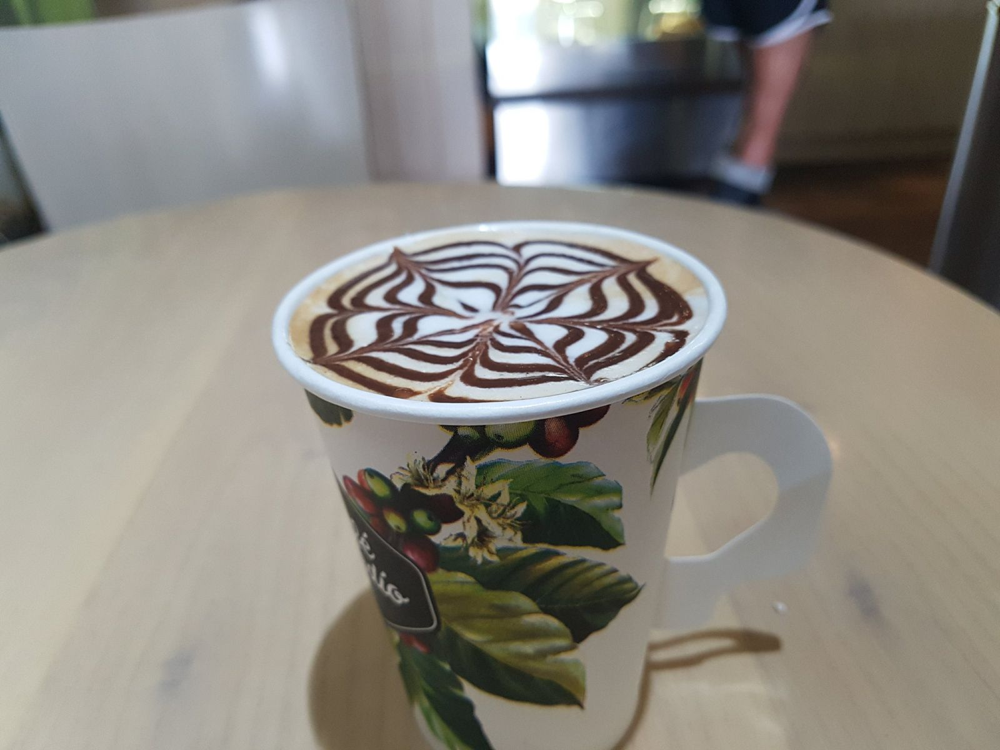

Coffee · Colombia · Salento
Café Quindío, Salento
I had two coffees at Café Quindío in Salento on the afternoon of December 13, 2017, at 15:55 and 16:05 by my phone's clock, after a day in the Cocora Valley. I am almost sure of the name. I have only the two photos, and the cups carry the café's coffee-bean design. This is part of my Salento chapter.
My conclusion up front: I do not remember the place well enough to say whether I would go back. I did not note what I ordered, what it cost or who I was with. I can tell you what the photos show and what the listings say today.
What the photos show


Both cups are paper, with a handle and a coffee-bean print. Both patterns are drawn in the foam, one in caramel and one in chocolate. The table is round and light. Google Photos places both in the centre of Salento.
What I found: a travel-site listing gives the address as Carrera 6 No. 5-10, on the main square. It lists hours of 9:30 to 18:30 on weekdays and 9:30 to 19:30 on weekends, a price range of $$ to $$$, and a rating of 4.3 from 47 reviews. The newest review is dated 14 January 2026 (tripadvisor.com).
What I did not find: a menu, prices in pesos, or the café's own page for this branch. The listing does not say who owns it. Reviewers call it part of a chain.
What I do not remember
I do not remember what I ordered, what I paid, how the coffee tasted or what the room looked like beyond the table in the photos. I do not remember whether it was the first café I tried in Salento.